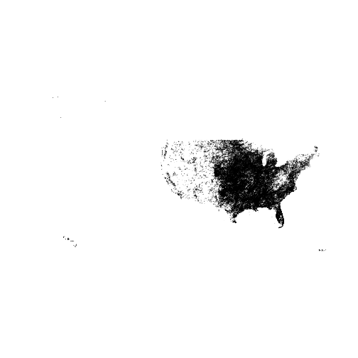

For additional vignettes see https://docs.ropensci.org/rnoaa/
Installation
GDAL
You’ll need GDAL (https://gdal.org/) installed first. You may want to use GDAL >= 0.9-1 since that version or later can read TopoJSON format files as well, which aren’t required here, but may be useful. Install GDAL:
- OSX - From https://www.kyngchaos.com/software/frameworks/
- Linux - run
sudo apt-get install gdal-bin - Windows - From https://trac.osgeo.org/osgeo4w/
Then when you install the R package rgdal (rgeos also requires GDAL), you’ll most likely need to specify where you’re gdal-config file is on your machine, as well as a few other things. I have an OSX Mavericks machine, and this works for me (there’s no binary for Mavericks, so install the source version):
install.packages("https://cran.r-project.org/src/contrib/rgdal_0.9-1.tar.gz", repos = NULL, type="source", configure.args = "--with-gdal-config=/Library/Frameworks/GDAL.framework/Versions/1.10/unix/bin/gdal-config --with-proj-include=/Library/Frameworks/PROJ.framework/unix/include --with-proj-lib=/Library/Frameworks/PROJ.framework/unix/lib")The rest of the installation should be easy. If not, let us know.
Stable version from CRAN
install.packages("rnoaa")or development version from GitHub
remotes::install_github("ropensci/rnoaa")Load rnoaa
NCDC v2 API data
NCDC Authentication
You’ll need an API key to use the NOAA NCDC functions (those starting with ncdc*()) in this package (essentially a password). Go to https://www.ncdc.noaa.gov/cdo-web/token to get one. You can’t use this package without an API key.
Once you obtain a key, there are two ways to use it.
- Pass it inline with each function call (somewhat cumbersome)
ncdc(datasetid = 'PRECIP_HLY', locationid = 'ZIP:28801', datatypeid = 'HPCP', startdate = '2013-10-01', enddate = '2013-12-01', limit = 5, token = "YOUR_TOKEN")- Alternatively, you might find it easier to set this as an option, either by adding this line to the top of a script or somewhere in your
.rprofile
options(noaakey = "KEY_EMAILED_TO_YOU")- You can always store in permamently in your
.Rprofilefile.
Fetch list of city locations in descending order
ncdc_locs(locationcategoryid='CITY', sortfield='name', sortorder='desc')
#> $meta
#> $meta$totalCount
#> [1] 1989
#>
#> $meta$pageCount
#> [1] 25
#>
#> $meta$offset
#> [1] 1
#>
#>
#> $data
#> mindate maxdate name datacoverage id
#> 1 1892-08-01 2020-07-31 Zwolle, NL 1.0000 CITY:NL000012
#> 2 1901-01-01 2020-10-02 Zurich, SZ 1.0000 CITY:SZ000007
#> 3 1957-07-01 2020-10-02 Zonguldak, TU 1.0000 CITY:TU000057
#> 4 1906-01-01 2020-10-02 Zinder, NG 0.9025 CITY:NG000004
#> 5 1973-01-01 2020-10-02 Ziguinchor, SG 1.0000 CITY:SG000004
#> 6 1938-01-01 2020-10-02 Zhytomyra, UP 0.9723 CITY:UP000025
#> 7 1948-03-01 2020-10-02 Zhezkazgan, KZ 0.9302 CITY:KZ000017
#> 8 1951-01-01 2020-10-02 Zhengzhou, CH 1.0000 CITY:CH000045
#> 9 1941-01-01 2020-07-31 Zaragoza, SP 1.0000 CITY:SP000021
#> 10 1936-01-01 2009-06-17 Zaporiyhzhya, UP 1.0000 CITY:UP000024
#> 11 1957-01-01 2020-10-02 Zanzibar, TZ 0.8016 CITY:TZ000019
#> 12 1973-01-01 2020-10-02 Zanjan, IR 0.9105 CITY:IR000020
#> 13 1893-01-01 2020-10-04 Zanesville, OH US 1.0000 CITY:US390029
#> 14 1912-01-01 2020-10-02 Zahle, LE 0.9819 CITY:LE000004
#> 15 1951-01-01 2020-10-02 Zahedan, IR 0.9975 CITY:IR000019
#> 16 1860-12-01 2020-10-02 Zagreb, HR 1.0000 CITY:HR000002
#> 17 1929-07-01 2020-09-13 Zacatecas, MX 1.0000 CITY:MX000036
#> 18 1947-01-01 2020-10-02 Yuzhno-Sakhalinsk, RS 1.0000 CITY:RS000081
#> 19 1893-01-01 2020-10-04 Yuma, AZ US 1.0000 CITY:US040015
#> 20 1942-02-01 2020-10-03 Yucca Valley, CA US 1.0000 CITY:US060048
#> 21 1885-01-01 2020-10-04 Yuba City, CA US 1.0000 CITY:US060047
#> 22 1998-02-01 2020-10-02 Yozgat, TU 0.9993 CITY:TU000056
#> 23 1893-01-01 2020-10-04 Youngstown, OH US 1.0000 CITY:US390028
#> 24 1894-01-01 2020-10-04 York, PA US 1.0000 CITY:US420024
#> 25 1869-01-01 2020-10-04 Yonkers, NY US 1.0000 CITY:US360031
#>
#> attr(,"class")
#> [1] "ncdc_locs"Get info on a station by specifying a dataset, locationtype, location, and station
ncdc_stations(datasetid='GHCND', locationid='FIPS:12017', stationid='GHCND:USC00084289')
#> $meta
#> NULL
#>
#> $data
#> elevation mindate maxdate latitude name datacoverage
#> 1 17.7 1899-01-01 2020-10-02 28.80286 INVERNESS 3 SE, FL US 1
#> id elevationUnit longitude
#> 1 GHCND:USC00084289 METERS -82.31266
#>
#> attr(,"class")
#> [1] "ncdc_stations"Search for data
out <- ncdc(datasetid='NORMAL_DLY', stationid='GHCND:USW00014895', datatypeid='dly-tmax-normal', startdate = '2010-05-01', enddate = '2010-05-10')See a data.frame
head( out$data )
#> # A tibble: 6 x 5
#> date datatype station value fl_c
#> <chr> <chr> <chr> <int> <chr>
#> 1 2010-05-01T00:00:00 DLY-TMAX-NORMAL GHCND:USW00014895 652 S
#> 2 2010-05-02T00:00:00 DLY-TMAX-NORMAL GHCND:USW00014895 655 S
#> 3 2010-05-03T00:00:00 DLY-TMAX-NORMAL GHCND:USW00014895 658 S
#> 4 2010-05-04T00:00:00 DLY-TMAX-NORMAL GHCND:USW00014895 661 S
#> 5 2010-05-05T00:00:00 DLY-TMAX-NORMAL GHCND:USW00014895 663 S
#> 6 2010-05-06T00:00:00 DLY-TMAX-NORMAL GHCND:USW00014895 666 SNote that the value column has strangely large numbers for temperature measurements. By convention, rnoaa doesn’t do any conversion of values from the APIs and some APIs use seemingly odd units.
You have two options here:
Use the
add_unitsparameter onncdcto havernoaaattempt to look up the units. This is a good idea to try first.Consult the documentation for whiechever dataset you’re accessing. In this case,
GHCNDhas a README (https://www1.ncdc.noaa.gov/pub/data/ghcn/daily/readme.txt) which indicatesTMAXis measured in tenths of degrees Celcius.
See a data.frame with units
As mentioned above, you can use the add_units parameter with ncdc() to ask rnoaa to attempt to look up units for whatever data you ask it to return. Let’s ask rnoaa to add units to some precipitation (PRCP) data:
with_units <- ncdc(datasetid='GHCND', stationid='GHCND:USW00014895', datatypeid='PRCP', startdate = '2010-05-01', enddate = '2010-10-31', limit=500, add_units = TRUE)
head( with_units$data )
#> # A tibble: 6 x 9
#> date datatype station value fl_m fl_q fl_so fl_t units
#> <chr> <chr> <chr> <int> <chr> <chr> <chr> <chr> <chr>
#> 1 2010-05-01T00:… PRCP GHCND:USW00014… 0 "T" "" 0 2400 mm_ten…
#> 2 2010-05-02T00:… PRCP GHCND:USW00014… 30 "" "" 0 2400 mm_ten…
#> 3 2010-05-03T00:… PRCP GHCND:USW00014… 51 "" "" 0 2400 mm_ten…
#> 4 2010-05-04T00:… PRCP GHCND:USW00014… 0 "T" "" 0 2400 mm_ten…
#> 5 2010-05-05T00:… PRCP GHCND:USW00014… 18 "" "" 0 2400 mm_ten…
#> 6 2010-05-06T00:… PRCP GHCND:USW00014… 30 "" "" 0 2400 mm_ten…From the above output, we can see that the units for PRCP values are “mm_tenths” which means tenths of a millimeter. You won’t always be so lucky and sometimes you will have to look up the documentation on your own.
Plot data, super simple, but it’s a start
out <- ncdc(datasetid='GHCND', stationid='GHCND:USW00014895', datatypeid='PRCP', startdate = '2010-05-01', enddate = '2010-10-31', limit=500)
ncdc_plot(out, breaks="1 month", dateformat="%d/%m")
plot of chunk unnamed-chunk-13
Note that PRCP values are in units of tenths of a millimeter, as we found out above.
More plotting
You can pass many outputs from calls to the noaa function in to the ncdc_plot function.
out1 <- ncdc(datasetid='GHCND', stationid='GHCND:USW00014895', datatypeid='PRCP', startdate = '2010-03-01', enddate = '2010-05-31', limit=500)
out2 <- ncdc(datasetid='GHCND', stationid='GHCND:USW00014895', datatypeid='PRCP', startdate = '2010-09-01', enddate = '2010-10-31', limit=500)
ncdc_plot(out1, out2, breaks="45 days")
plot of chunk unnamed-chunk-14
Get table of all datasets
ncdc_datasets()
#> $meta
#> $meta$offset
#> [1] 1
#>
#> $meta$count
#> [1] 11
#>
#> $meta$limit
#> [1] 25
#>
#>
#> $data
#> uid mindate maxdate name
#> 1 gov.noaa.ncdc:C00861 1763-01-01 2020-10-03 Daily Summaries
#> 2 gov.noaa.ncdc:C00946 1763-01-01 2020-09-01 Global Summary of the Month
#> 3 gov.noaa.ncdc:C00947 1763-01-01 2020-01-01 Global Summary of the Year
#> 4 gov.noaa.ncdc:C00345 1991-06-05 2020-10-02 Weather Radar (Level II)
#> 5 gov.noaa.ncdc:C00708 1994-05-20 2020-10-03 Weather Radar (Level III)
#> 6 gov.noaa.ncdc:C00821 2010-01-01 2010-01-01 Normals Annual/Seasonal
#> 7 gov.noaa.ncdc:C00823 2010-01-01 2010-12-31 Normals Daily
#> 8 gov.noaa.ncdc:C00824 2010-01-01 2010-12-31 Normals Hourly
#> 9 gov.noaa.ncdc:C00822 2010-01-01 2010-12-01 Normals Monthly
#> 10 gov.noaa.ncdc:C00505 1970-05-12 2014-01-01 Precipitation 15 Minute
#> 11 gov.noaa.ncdc:C00313 1900-01-01 2014-01-01 Precipitation Hourly
#> datacoverage id
#> 1 1.00 GHCND
#> 2 1.00 GSOM
#> 3 1.00 GSOY
#> 4 0.95 NEXRAD2
#> 5 0.95 NEXRAD3
#> 6 1.00 NORMAL_ANN
#> 7 1.00 NORMAL_DLY
#> 8 1.00 NORMAL_HLY
#> 9 1.00 NORMAL_MLY
#> 10 0.25 PRECIP_15
#> 11 1.00 PRECIP_HLY
#>
#> attr(,"class")
#> [1] "ncdc_datasets"Get data category data and metadata
ncdc_datacats(locationid = 'CITY:US390029')
#> $meta
#> $meta$totalCount
#> [1] 39
#>
#> $meta$pageCount
#> [1] 25
#>
#> $meta$offset
#> [1] 1
#>
#>
#> $data
#> name id
#> 1 Annual Agricultural ANNAGR
#> 2 Annual Degree Days ANNDD
#> 3 Annual Precipitation ANNPRCP
#> 4 Annual Temperature ANNTEMP
#> 5 Autumn Agricultural AUAGR
#> 6 Autumn Degree Days AUDD
#> 7 Autumn Precipitation AUPRCP
#> 8 Autumn Temperature AUTEMP
#> 9 Computed COMP
#> 10 Computed Agricultural COMPAGR
#> 11 Degree Days DD
#> 12 Dual-Pol Moments DUALPOLMOMENT
#> 13 Echo Tops ECHOTOP
#> 14 Hydrometeor Type HYDROMETEOR
#> 15 Miscellany MISC
#> 16 Other OTHER
#> 17 Overlay OVERLAY
#> 18 Precipitation PRCP
#> 19 Reflectivity REFLECTIVITY
#> 20 Sky cover & clouds SKY
#> 21 Spring Agricultural SPAGR
#> 22 Spring Degree Days SPDD
#> 23 Spring Precipitation SPPRCP
#> 24 Spring Temperature SPTEMP
#> 25 Summer Agricultural SUAGR
#>
#> attr(,"class")
#> [1] "ncdc_datacats"Tornado data
The function tornadoes() simply gets all the data. So the call takes a while, but once done, is fun to play with.
shp <- tornadoes()
#> OGR data source with driver: ESRI Shapefile
#> Source: "/Users/sckott/Library/Caches/R/noaa_tornadoes/1950-2018-torn-aspath", layer: "1950-2018-torn-aspath"
#> with 63645 features
#> It has 22 fields
#> Integer64 fields read as strings: om yr mo dy tz stf stn mag inj fat wid fc
library('sp')
plot(shp)
plot of chunk unnamed-chunk-17
HOMR metadata
In this example, search for metadata for a single station ID
homr(qid = 'COOP:046742')Argo buoys data
There are a suite of functions for Argo data, a few egs:
# Spatial search - by bounding box
argo_search("coord", box = c(-40, 35, 3, 2))
# Time based search
argo_search("coord", yearmin = 2007, yearmax = 2009)
# Data quality based search
argo_search("coord", pres_qc = "A", temp_qc = "A")
# Search on partial float id number
argo_qwmo(qwmo = 49)
# Get data
argo(dac = "meds", id = 4900881, cycle = 127, dtype = "D")CO-OPS data
Get daily mean water level data at Fairport, OH (9063053)
coops_search(station_name = 9063053, begin_date = 20150927, end_date = 20150928,
product = "daily_mean", datum = "stnd", time_zone = "lst")
#> $metadata
#> $metadata$id
#> [1] "9063053"
#>
#> $metadata$name
#> [1] "Fairport"
#>
#> $metadata$lat
#> [1] "41.7597"
#>
#> $metadata$lon
#> [1] "-81.2811"
#>
#>
#> $data
#> t v f
#> 1 2015-09-27 174.430 0,0
#> 2 2015-09-28 174.422 0,0Additional vignettes
For additional vignettes see https://docs.ropensci.org/rnoaa/